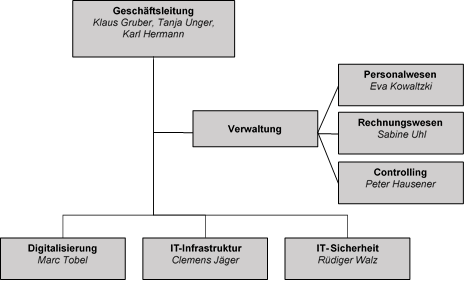

Unternehmensprofil
Die IT Sol GmbH ist ein aufstrebendes Beratungsunternehmen für Fragen
rund um die Themen Digitalisierung, IT-Infrastruktur und IT-Sicherheit.
Das Unternehmen beschäftigt 35 Mitarbeiterinnen und Mitarbeiter. Zu den
Auftraggebern der IT Sol GmbH gehören Geschäftskunden aus ganz Deutschland.
Der Hauptsitz des Unternehmens ist in Achrieden.
Unternehmensleitbild
Unsere Kundinnen und Kunden bilden den Mittelpunkt unseres Handels und stellen für uns Partnerinnen und Partner auf Augenhöhe dar. Unser vorrangiges Ziel ist es, den kundenspezifischen IT-Anforderungen gerecht zu werden. Dies stellt die Basis für langfristige Kundenbeziehungen dar, die von Vertrauen und Loyalität geprägt sind. Wir sind uns dessen bewusst, dass eine Weiterempfehlung durch unsere Kundinnen und Kunden die beste Werbung für unser Unternehmen ist.
Wir sehen es als unsere Aufgabe an, passgenaue Lösungen mit Weitblick zu liefern. Hierbei liegt uns die direkte Hilfe mit kurzen Reaktionszeiten am Herzen. Wir sind daher per Telefon, Fernzugriff wie auch mit unserem Vor-Ort-Service für unsere Kundschaft da.
Wir sind uns dessen bewusst, dass ein Unternehmen die Summe aller Mitarbeiterinnen und Mitarbeiter ist. Daher haben wir es uns als Ziel gesetzt, ein leistungsförderndes Arbeitsumfeld zu schaffen, in welchem sich die Kolleginnen und Kollegen beständig weiterentwickeln und Verantwortung tragen können. Dies sichert die Arbeitszufriedenheit unserer Belegschaft und führt dazu, dass sich ihr hohes Fachwissen fortlaufend weiterentwickelt. So werden wir den Anforderungen unserer dynamischen Branche gerecht. Die große Expertise unserer Mitarbeiterinnen und Mitarbeiter garantiert die erstklassige Bearbeitung unserer Kundenprojekte.
Unsere Mitarbeiterinnen und Mitarbeiter sollen sich langfristig bei uns wohl fühlen. Wir fördern daher das gesundheitsbewusste Arbeitsklima und bieten flexible Arbeitsmodelle, welche den Einklang von Arbeit und Familie fördern. Unser Anspruch ist es, durch die Gestaltung der Arbeitsbedingungen zur persönlichen Zufriedenheit der Mitarbeiterinnen und Mitarbeiter beizutragen. Hierzu zählt auch, die Arbeit des Einzelnen durch die Übertragung von Verantwortung zu honorieren und Leistung wertzuschätzen. Die Zusammenarbeit im Team ist uns sehr wichtig und stellt die ganzheitliche Betrachtung komplexer Herausforderungen aus unterschiedlichen Blickwinkeln sicher. Wir arbeiten auch über Teamgrenzen hinweg zusammen und unterstützen uns gegenseitig. Bei unserer Arbeit sind wir uns unserer sozialen Verantwortung bewusst. Wir versuchen den Einsatz natürlicher Ressourcen zu minimieren und unsere Kundinnen und Kunden für die Auswirkungen der IT-Nutzung auf die Umwelt zu sensibilisieren. Umweltschonende IT-Lösungen stellen für uns daher eine Investition in die Zukunft dar.Auch im Hinblick auf unsere Lieferanten achten wir auf Nachhaltigkeit und Umweltschutz. Wir arbeiten mit regionalen Partnerinnen und Partnern zusammen und setzen auf Qualität und Datenschutz „Made in Germany“. Die Zuverlässigkeit unserer Lieferantinnen und Lieferanten und Servicepartnerinnen und -partner sowie deren hohe Waren- und Dienstleistungsqualität sind Grundvoraussetzungen für die Zufriedenheit unserer Kundinnen und Kunden. Gemeinsam mit der Termintreue sind sie feste Grundsätze bei der Wahl unserer Partnerinnen und Partnern.
Unser Organigramm
